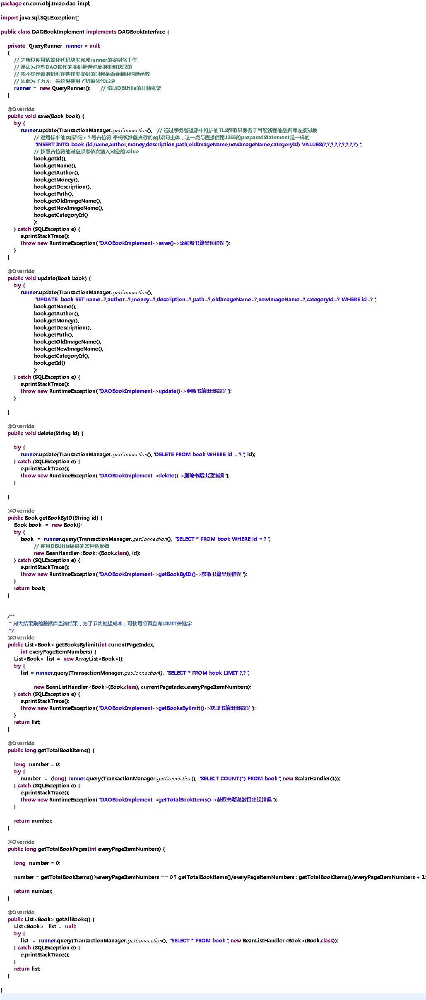

DBUtils是由阿帕奇提供的一套专门用来简化在服务器端使用Java代码操作数据库的SQL操作的开源框架。其本质上是利用动态代理、装饰等设计模式实现对J2EE原有SQL对象（如JDBC中的PreparedStatement）的例封装并使用反射机制实现查询语句处理结果集所返回数据封装进入JavaBean的各种适用场景的适配器。通过这一框架我们可以稍微简化在Java源文件中的SQL语句的编写并将SQL操作变得更合理和顺畅。
